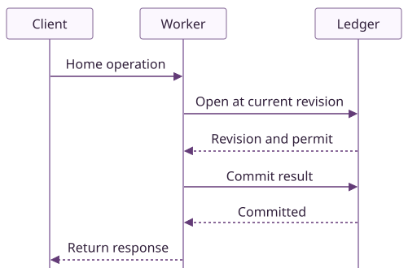

Replicas, standby and backups
A Home can publish a read-only fallback feed or authorize a second server to handle private operations for the same logical identity.
Committing through a standby
A client verifies the owner-signed standby grant. A worker requests the current revision and a short one-use permit from the commit authority. It executes against that revision and returns success after the authority durably records the result.

A public fallback feed
A permitted replica pulls the founding Home’s moderated public projection, checks its digest on refresh and applies its own hides. A read-only client sends just the community ID and can check the snapshot time. When personalized privacy rules require it, the client keeps its saved feed instead. New writes stay in the outbox. An explicit Home refusal does not authorize fallback.
Full-service takeover
The standby grant binds a physical endpoint to the enrolled logical Home. Authenticated clients can retry eligible operations through it with the same request ID. Both workers use a single commit authority and retry receipts. A worker cut off from that authority cannot acknowledge new private state. Safety reports stay on the primary’s separate route.
Restoring after deletion
A protected Home backup encrypts recoverable post content using keys held in a separate live deletion guard. A valid deletion retires the corresponding key and records proof. Restoring an older protected backup with the current guard applies later deletions before serving content. Losing or rolling back the guard changes those guarantees. A reader’s screenshot and an independently retained copy remain under that reader’s control.